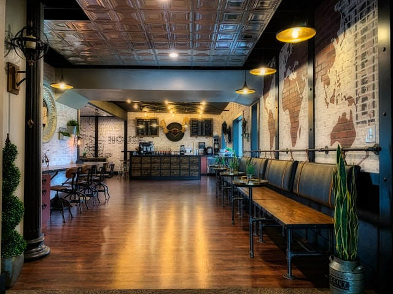
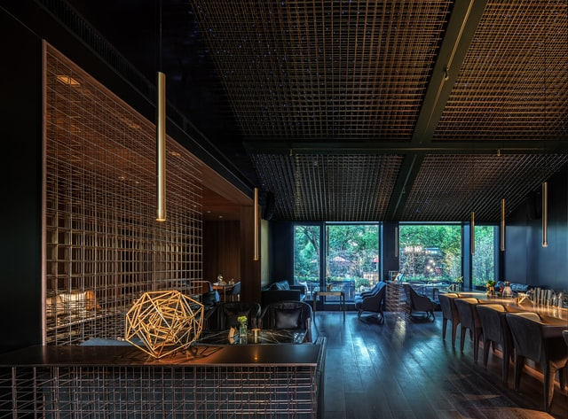

Go to the main content

Le vie dei Casari
Piccoli Caseifici, Grandi Formaggi
ONAF
L’evento nasce da una intuizione di ONAF –
Delegazione di Milano sulla necessità di divulgare
nel territorio la cultura Casaria e la valorizzazione
della qualità attraverso la degustazione
consapevole presso un pubblico di appassionati.


A Tutto Tondo APS
L’ associazione culturale locale “A Tutto Tondo
APS”, con il supporto dell’amministrazione comunale e di altre realtà associative, gestirà gli aspetti organizzativi e logistici
dell’iniziativa, per valorizzare l’immagine del territorio in cui si svolgerà l’evento.
La Comunicazione
La comunicazione dell’evento sarà gestita da un gruppo di lavoro costituito da risorse dell’Associazione organizzatrice “A Tutto
Tondo APS”, di ONAF – Delegazione di Milano, Fisar Pavia e UnionBirrai al fine di coordinare efficacemente l’attività su canali
social e web dedicati all’evento e sui loro rispettivi canali di comunicazione per ottenerne la massima diffusione possibile.
La collaborazione con la testata giornalistica Videodegustando consentirà la produzione di brevi video promozionali dell’evento e
delle realtà casearie presenti che verranno proiettati durante la manifestazione.